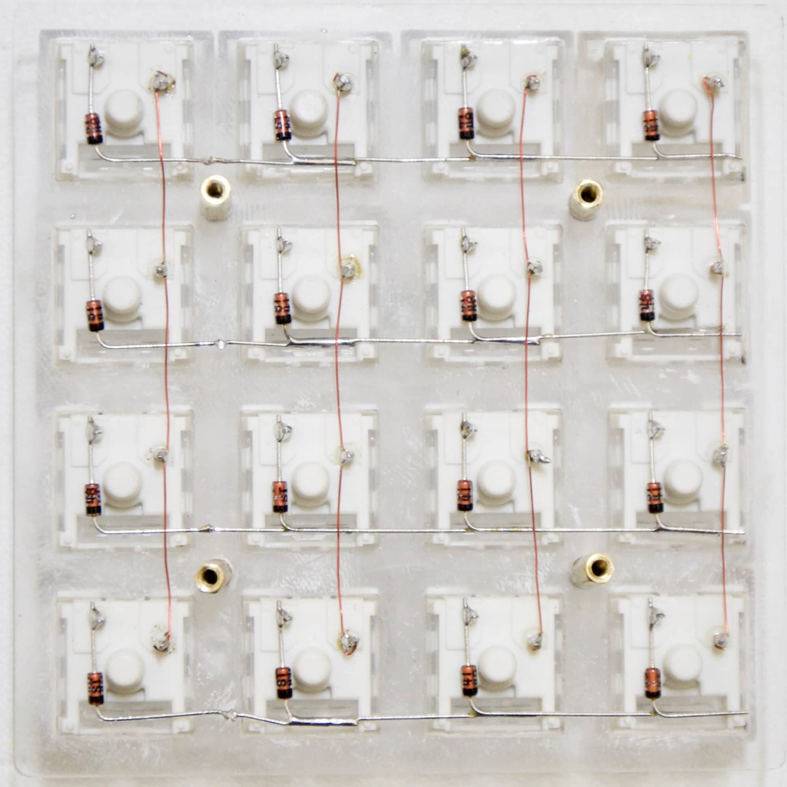

[insert switches into laser cut switch plate]
Why handwire?
- Learning experience
- Prototyping/One-offing
- Frugality
Soldering Safety & Tips
- Never touch the tip!
- Do not hold components in hand while soldering.
- Clean tip on wool regularly.
- Return soldering iron to stand when not in use.
- Turn off soldering iron.
- Always wash your hands after soldering.
[cut wire and strip one end of each wire]

Do This Now . . .
- Tin switch pins
- Bend diodes
- "Tack" anodes to switches
- Solder cathodes in rows
- Solder anodes
---
- Loop magnet wire around pin
- Solder magnet wire columns